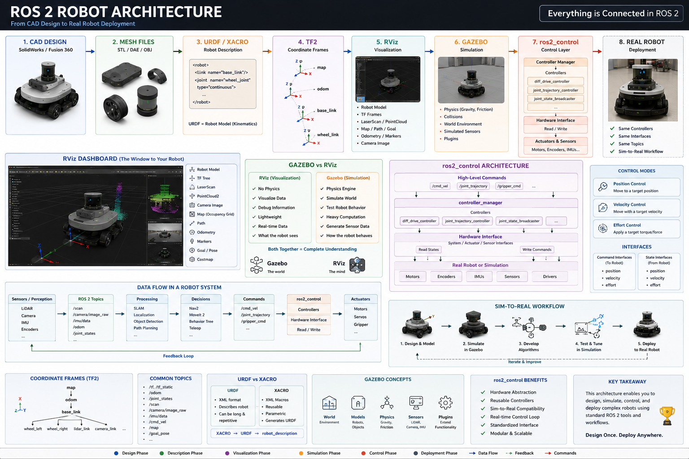

This table of contents lays out all 20 chapters of the book in learning order. Each chapter builds on the concepts of the previous ones, so it's best to read them in this order. Click any card to open that chapter.

The chapters are designed to be read in order, each building on the concepts of the one before it — so it's best to read them in sequence rather than jumping around. The ARCHO project runs continuously through every chapter, so the further you go, the more complete the picture becomes.